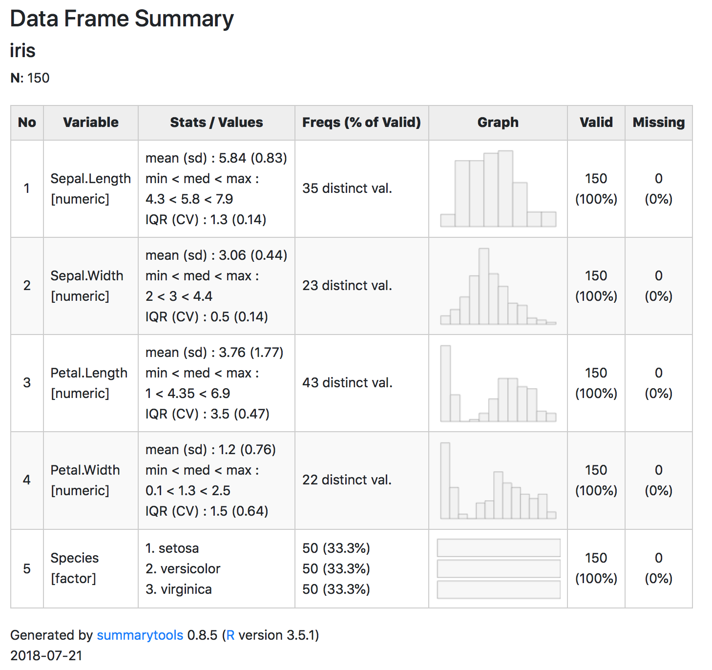

Chapter 133 Basit tanımlayıcı istatistikler
summary()meanmedianminmaxsdtable()133.1 summarytools
https://cran.r-project.org/web/packages/summarytools/vignettes/Introduction.html


133.2 skimr
library(skimr)
skim(df)133.3 DataExplorer
library(DataExplorer)
DataExplorer::create_report(df)
133.4 Grafikler
descr(tobacco, style = 'rmarkdown')
print(descr(tobacco), method = 'render', table.classes = 'st-small')
dfSummary(tobacco, style = 'grid', plain.ascii = FALSE)
print(dfSummary(tobacco, graph.magnif = 0.75), method = 'render')Here, building up a #ggplot2 as slowly as possible, #rstats. Incremental adjustments. #rstatsteachingideas pic.twitter.com/nUulQl8bPh
— Gina Reynolds ((???)) August 13, 2018

Dreaming of a fancy #Rstats #ggplot #dataviz but still scared of typing #code? (???) esquisse package has you covered https://t.co/1vIDXcVAAF pic.twitter.com/RlTkptnrNv
— Radoslaw Panczak ((???)) October 2, 2018